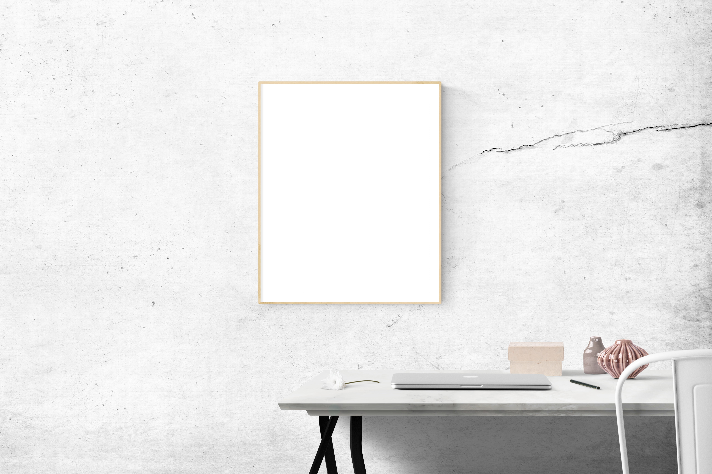

Finding simplicity in life
July 23, 2019 | 3 comments
Life can get complicated really quickly, but it doesn't have to be! There are many ways to simplify your life, a few of which we've explored in the past. This weeb we're taking a bit of an approach though, in how you can find simplicity in the life you're already living.
CONTINUE READING